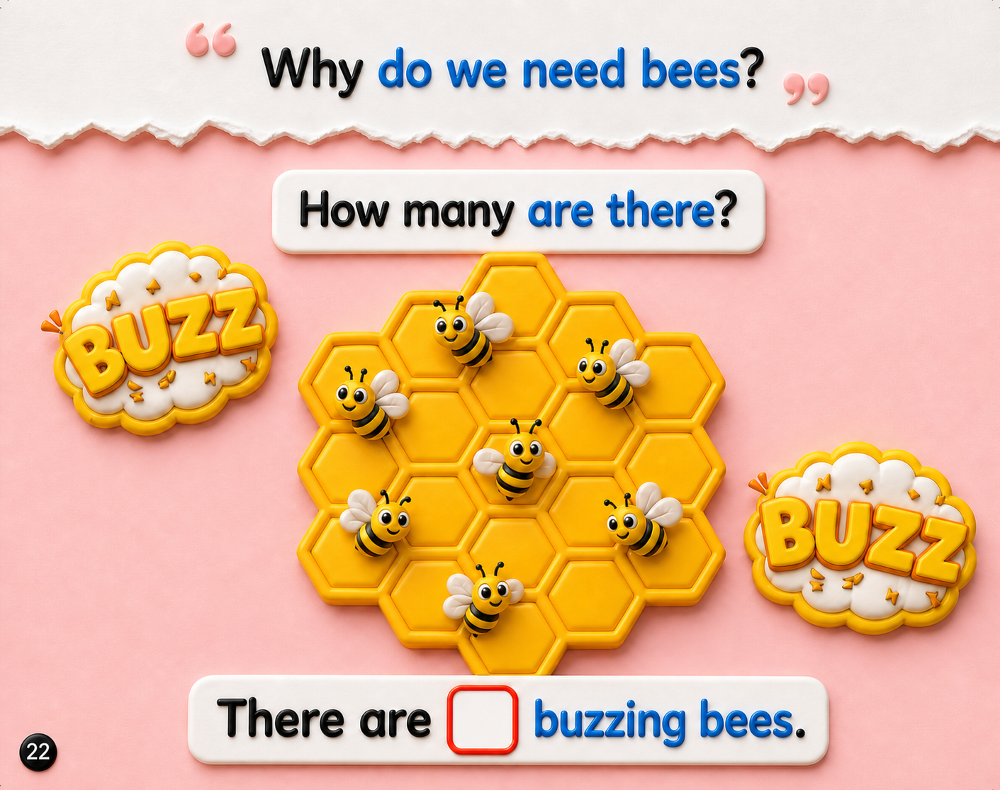

⬅️ Previous Page
📖 Page 3 of 6
Next Page ➡️
🏠 Week 3 Home
Week 3 — Why do we need bees?
🎵 Week Song
🃏 Flashcards

0 / 7
0
▲
▼
GO
▶ Start Activity
Great counting! 🐝
There are 7 buzzing bees.
↻ Try Again
Next Page ➡️
Press Start Activity to begin.
↻ Try Again